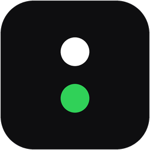

PortkeeperSee the ports you have open,
and who started them.
A tiny widget in your menu bar or tray. Every port and Docker container, grouped by project, with the logo of the agent or IDE that started it. Stop it with one click. Free for personal use.
Live demo with sample data. Try it.
01Scan. Listening ports and
docker ps, grouped by the folder they run from.02Who. Walks up the process tree to the agent or IDE: Claude Code, Codex, Cursor, Gemini, Copilot, VS Code…
03Act. Open, stop, start again, or lock a project so nobody stops it by mistake. Everything stays on your machine.
Maintained by
Marc Aparisi Rull
LinkedIn · GitHub · Illeta Digital